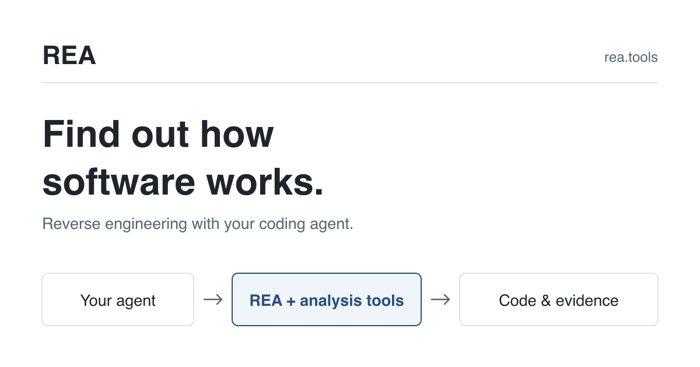

안녕하세요. dev.log입니다.
앱에서 ‘내보내기’를 눌렀을 때 파일은 어디에 저장될까요? 화면에 설명이 없다면, 그 버튼이 어떤 코드를 실행하는지 따라가야 합니다. REA(Reverse Engineer Anything)는 AI가 프로그램을 조사할 때 쓰는 오픈소스 분석 도구입니다. 프로그램의 기능과 관련 코드를 찾아, 동작을 설명하거나 비슷한 기능을 새로 만드는 데 활용합니다.
처음에는 공식 실습의 작은 메모 앱처럼 확인할 기능이 하나인 예제로 시작해 보세요. 실험에서는 이 앱을 REA로 분석한 뒤 저장 코드를 대조하고, CSV 변환 함수를 실행해 특수 문자가 유지되는지 확인했습니다.

메모 앱 하나로 시작하기
실습 대상은 파일 여섯 개로 구성된 메모 앱입니다. Electron이라는 데스크톱 앱 제작 기술로 작성되어 있지만, 소스 분석과 CSV 변환 확인에는 Electron을 설치하거나 앱 창을 띄울 필요가 없습니다. 공식 예제 ZIP을 내려받아 압축을 풀면 notes-example 폴더가 나옵니다.
Node.js는 JavaScript 코드를 실행하는 프로그램이며, npm에 포함된 npx는 분석 도구를 받아 실행합니다. REA 6.7.0은 Node.js 22.19 이상인 22 계열, 24.11 이상인 24 계열 또는 26 이상을 지원합니다. 먼저 node -v로 버전을 확인한 뒤 압축을 푼 상위 폴더로 이동하세요.
아래 두 실행 명령은 macOS·Linux의 Bash/Zsh 기준입니다. 실험 환경은 macOS arm64, Node.js 26.0.0, npm 11.12.1이었고 REA는 6.7.0으로 고정했습니다. Windows PowerShell에서 따라 하려면 공식 실습의 PowerShell 명령을 사용하세요.
npx -y rea-agents@6.7.0 analyze-javascript-application \
./notes-example --format json --full-output이 명령은 앱 파일을 읽어 구조를 분석하고, 결과를 JSON이라는 구조화된 텍스트로 출력합니다. AI 채팅에 연결하는 MCP 설정을 거치지 않는 CLI, 즉 터미널 실행 방식입니다. AI에 연결해 대화로 조사하려면 공식 시작 안내의 별도 설정 절차를 따르면 됩니다.
출력에서 ok가 true인지, parse_failures가 0인지 먼저 확인하세요. 이번 결과는 전체 여섯 파일 중 JavaScript 파일 네 개를 해석했고, 화면 쪽에서 보낸 내보내기 요청과 이를 받는 처리 코드 한 쌍을 연결했습니다. 이 수치는 분석이 끝났는지 확인하는 정보이며, 앱의 모든 기능이 정확하다는 보증은 아닙니다.
내보내기 버튼에서 저장 코드까지
확인할 질문은 “Export notes를 누르면 어디에 어떤 내용을 저장하나요?”입니다. REA가 찾은 요청 연결과 실제 소스를 함께 읽으면 다음 경로를 따라갈 수 있습니다.
| 파일 | 확인한 처리 | 다음 단계 |
|---|---|---|
renderer.js | 버튼 클릭 시 notes.exportCsv()를 호출합니다. | 화면에서 내보내기를 요청합니다. |
preload.js | notes:export라는 이름으로 요청을 보냅니다. | 앱 내부의 처리 코드로 전달합니다. |
main.js | 같은 이름의 요청을 받아 저장 경로를 정합니다. | CSV를 만든 뒤 파일에 씁니다. |
csv.js | 메모의 번호와 제목을 CSV로 변환합니다. | 파일에 들어갈 문자열을 돌려줍니다. |
화면에서 보낸 요청과 앱 내부의 처리 코드를 잇는 통신을 IPC라고 부릅니다. REA 결과의 paired_renderer_transmissions가 1이라는 값은 이 예제에서 요청 하나와 처리 코드가 연결되었다는 뜻입니다. 저장 위치와 파일 내용은 그 연결을 따라 소스에서 확인했습니다.
공식 예제의 main.js 8~12행에는 아래 처리가 있습니다.
ipcMain.handle("notes:export", () => {
const destination = path.join(app.getPath("downloads"), "notes.csv");
writeFileSync(destination, toCsv(notes), "utf8");
return destination;
});downloads로 지정한 다운로드 폴더에 notes.csv를 만들고, toCsv(notes)가 돌려준 문자열을 씁니다. CSV는 데이터를 행과 열로 저장하는 텍스트 형식이며 엑셀 같은 프로그램으로 열 수 있습니다. 이 예제의 열 이름은 id와 title, 즉 메모 번호와 제목입니다.
여기까지는 코드를 실행하지 않고 읽어 알아낸 저장 동작입니다. 실제 컴퓨터의 폴더 권한이나 디스크 상태까지 확인한 결과는 아니므로, 이 분석만으로 파일 저장 성공을 확정할 수는 없습니다.
쉼표가 들어간 메모도 그대로 저장될까?
CSV는 쉼표로 열을 나눕니다. 메모 제목이 Hello, "REA"라면 제목 속 쉼표 때문에 열이 잘못 나뉘지 않을까요? 공식 실습은 이 입력을 예로 들며 변환 함수의 결과를 확인하도록 안내합니다.
실험에서는 공식 입력에 한국어·줄바꿈·빈 목록을 더해 다섯 경우를 확인했습니다. 원본 csv.js를 수정하지 않고 toCsv 함수를 실행한 뒤, 미리 정한 예상 문자열과 실제 출력을 비교했습니다. 그 출력을 Python의 CSV 읽기 기능으로 다시 열어 메모 번호와 제목이 원래 값으로 돌아오는지도 대조했습니다.
| 입력 | 실제 출력에서 확인한 점 | 다시 읽은 결과 |
|---|---|---|
First note | 제목을 큰따옴표로 감쌌습니다. | 원래 제목과 같았습니다. |
Hello, "REA" | 제목 안의 큰따옴표를 두 번 적었습니다. | 쉼표와 따옴표가 유지됐습니다. |
서울, "메모" | 한국어 제목에도 같은 규칙을 적용했습니다. | 원래 제목과 같았습니다. |
| 두 줄로 된 제목 | 큰따옴표 안에 실제 줄바꿈을 남겼습니다. | 한 제목 안의 줄바꿈이 유지됐습니다. |
| 빈 메모 목록 | 열 이름인 id,title만 출력했습니다. | 데이터 행이 없었습니다. |
Hello, "REA"의 실제 출력은 다음과 같습니다.
id,title
1,"Hello, ""REA"""제목 전체를 큰따옴표로 감싸고, 제목 안의 큰따옴표는 두 번 적기 때문에 CSV를 읽는 프로그램이 제목과 열 구분자를 구별할 수 있습니다. 다섯 입력 모두 예상 문자열과 일치했고, 다시 읽었을 때 원래 데이터가 유지됐습니다. 이는 예제의 변환 함수를 확인한 결과이며, 모든 앱의 내보내기 기능을 평가한 결과로 확대할 수는 없습니다.
직접 확인하려면 notes-example 폴더에서 아래 명령을 실행해 보세요. 제목을 바꾸면 다른 입력도 확인할 수 있습니다.
node -e 'const {toCsv}=require("./csv.js"); process.stdout.write(toCsv([{id:1,title:"Hello, \"REA\""}]))'일반 AI에게 파일을 읽히면 어떨까?
파일을 읽을 수 있는 개발용 AI에는 같은 폴더를 주고 저장 동작을 설명해 달라고 요청할 수 있습니다. 이 예제처럼 파일이 여섯 개뿐이면 직접 코드를 읽어도 저장 경로를 따라가기 어렵지 않습니다. REA를 쓰는 목적을 단순히 “AI가 코드를 읽게 해 주는 것”으로 설명하면 차이가 잘 드러나지 않습니다.
이번에 확인한 REA의 역할은 파일을 분석해 화면의 요청과 처리 코드의 관계를 근거 위치와 함께 정리하는 것입니다. AI는 그 결과를 읽고 사람이 이해할 수 있게 설명할 수 있습니다. 이 실험은 동일한 AI에 두 방식을 반복시킨 성능 비교가 아니므로, REA를 연결하면 더 빠르거나 정확해진다고 결론 내리지는 않습니다.
분석 결과를 받았다면 “어느 파일의 어떤 코드가 그 설명을 뒷받침하나요?”라고 이어서 물어보세요. 답이 구체적일수록 이번 CSV처럼 작은 입력을 넣어 확인할 지점도 찾기 쉽습니다.
어떤 앱부터 맡기면 좋을까?
자신이 만들었거나 분석을 허가받은 앱에서, 내보내기 버튼처럼 결과를 확인하기 쉬운 기능 하나를 고르는 것이 좋습니다. 자료의 종류에 따라 준비물도 달라집니다. 공식 FAQ는 JavaScript 소스 분석과 실행 파일의 깊은 분석을 구분합니다.
| 확인하려는 대상 | 시작할 방법 | 준비할 것 |
|---|---|---|
| REA가 무엇을 하는지 | 공식 계산기·게임 데모를 봅니다. | 웹브라우저가 있으면 됩니다. |
| 이번 메모 앱처럼 소스가 있는 예제 | 폴더를 지정해 정적 분석을 실행합니다. | Node.js와 npm이 필요합니다. |
| 완성된 실행 파일의 내부 처리 | 대상에 맞는 분석 도구를 연결합니다. | Hopper·Ghidra·IDA 같은 별도 도구가 필요합니다. |
웹페이지를 조사해도 비공개 서버 코드까지 얻는 것은 아니며, 실행 파일에서 원래 주석과 변수 이름이 모두 복원되는 것도 아닙니다. REA 자체는 MIT 라이선스로 공개되어 있지만 AI 서비스와 일부 분석 도구의 비용은 별도입니다. 회사나 고객의 앱을 AI와 함께 분석한다면, 분석 결과에 적용되는 모델 제공자의 데이터 정책도 확인해야 합니다.
저장 위치를 찾았다면 다음에는 “파일을 쓸 수 없을 때 오류가 화면에 어떻게 전달되나요?”라고 질문해 보세요. 저장에 실패했을 때 확인할 코드도 좁힐 수 있습니다.